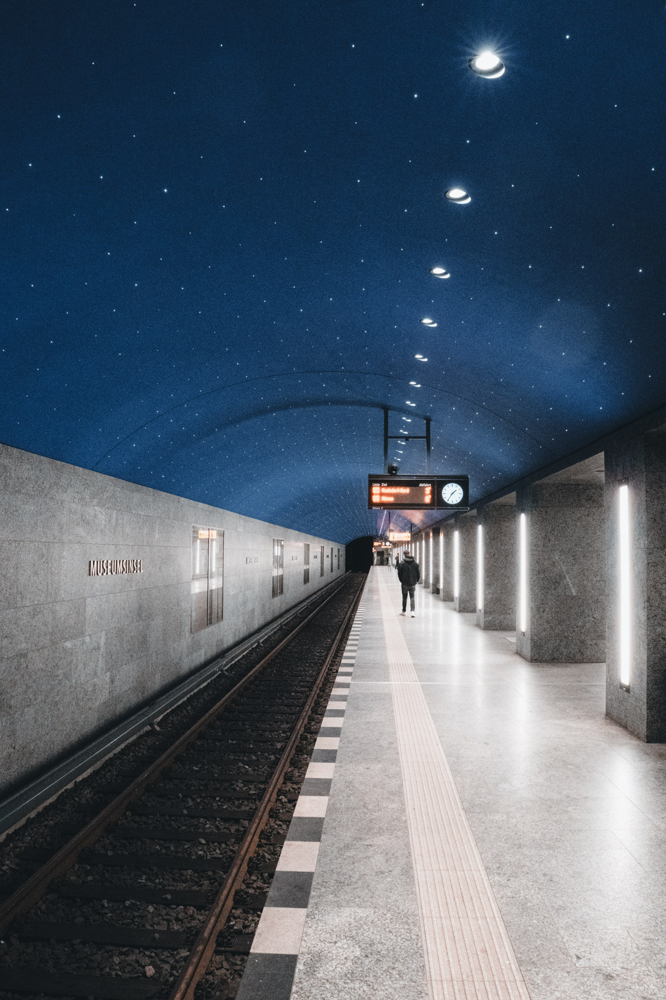
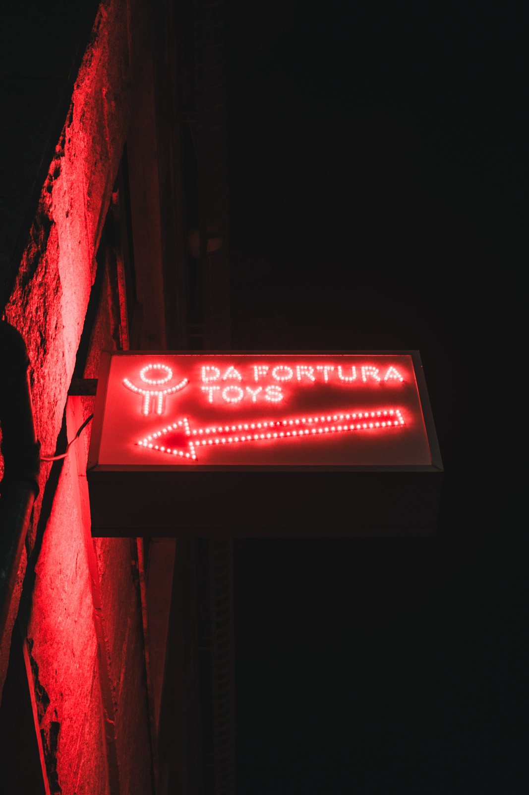
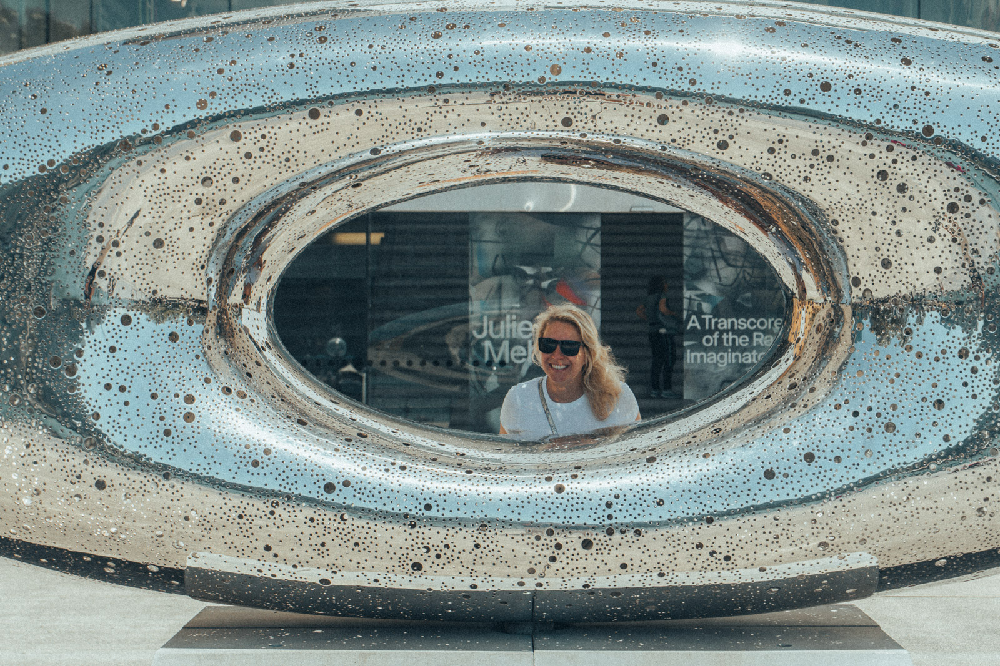
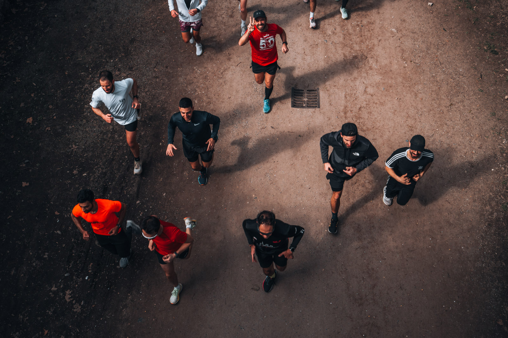
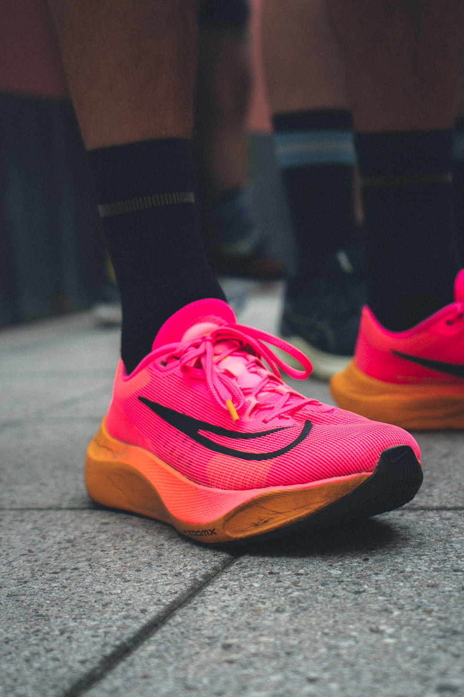
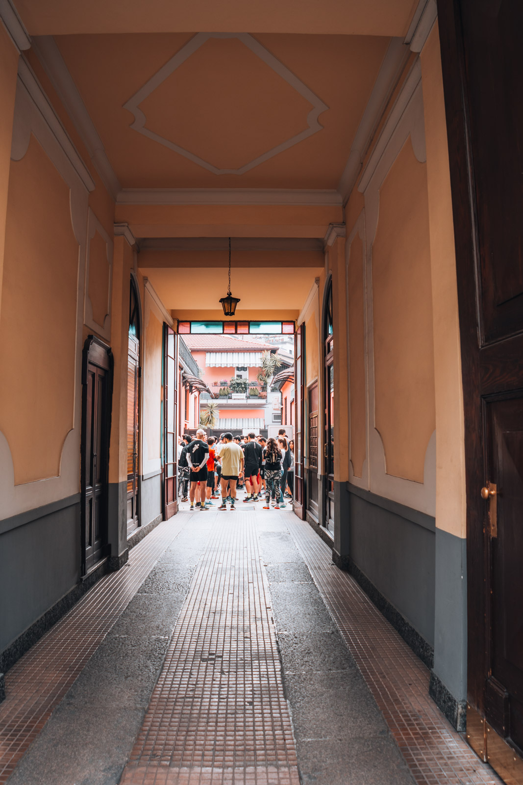

Cos'è la street
La fotografia di strada racconta la vita quotidiana negli spazi pubblici. Non c'è una posa, non c'è un set. C'è quello che succede, e il tuo modo di vederlo.
Non serve una grande città. Serve uno sguardo curioso e la disponibilità a tornare tante volte negli stessi posti.
Nella street il soggetto non è la persona. È il rapporto tra le persone, la luce e lo spazio.
Superare la timidezza
Quasi tutti, all'inizio, hanno paura di fotografare sconosciuti. È normale. Qualche abitudine aiuta.
- Parti dai luoghi, non dalle persone. Trova una bella luce o una bella geometria e aspetta che qualcuno ci entri.
- Resta nello stesso posto. Dopo dieci minuti nessuno fa più caso a te.
- Non nasconderti. Chi si nasconde sembra sospetto. Chi fotografa apertamente e sorride, molto meno.
- Se qualcuno ti chiede, rispondi. Mostra la foto. Se vuole che la cancelli, cancellala.
Messa a fuoco a zona
Nella street non c'è tempo per mettere a fuoco ogni volta. La tecnica classica è la messa a fuoco a zona: prepari in anticipo una fascia di distanze nitide e scatti senza pensarci.
- Imposta la messa a fuoco manuale.
- Chiudi il diaframma a f/8 o f/11.
- Metti a fuoco a circa 3 metri.
- Con un 35 mm equivalente, tutto da circa 1,5 metri fino a molti metri sarà accettabilmente nitido. Con focali più corte la zona si allarga ancora.
Usa gli ISO automatici con un tempo minimo di 1/250 per fermare chi cammina.

La luce della città
In città la luce rimbalza, si spezza, si colora. I muri fanno da riflettori, i vicoli da coni d'ombra, le vetrine da specchi.
- Lame di luce. Nelle ore basse il sole entra nelle strade e crea zone illuminate in mezzo all'ombra. Esponi per la luce e lascia che l'ombra diventi nera.
- Riflessi. Vetrine, pozzanghere, specchi. Raddoppiano la scena e la rendono ambigua.
- Insegne e neon. Di notte sono una sorgente di luce e un soggetto.


Geometrie e livelli
Le città sono fatte di linee. Strisce pedonali, scale, ombre, finestre. Una buona geometria è un palcoscenico in attesa di un attore.

- Lavora a strati. Qualcosa in primo piano, qualcosa a metà, qualcosa sullo sfondo. È la cosa più difficile e la più gratificante.
- Cerca il contrasto tra le forme rigide della città e i gesti delle persone.
- Non dimenticare i dettagli: mani, scarpe, oggetti. Raccontano senza mostrare volti.


Ritratti di strada
C'è anche un'altra street, quella in cui chiedi. Ti avvicini, spieghi cosa ti ha colpito e chiedi di fare un ritratto. Molte persone dicono di sì.
- Sii specifico: «Mi piace la luce sul suo cappello».
- Scatta in fretta, una o due foto. Non trasformarlo in una sessione.
- Offri di mandare la foto. È il modo migliore di ringraziare.
Etica e diritto all'immagine
In Italia fotografare in un luogo pubblico è generalmente consentito. Pubblicare è un'altra cosa. Il ritratto di una persona riconoscibile, secondo la legge sul diritto d'autore e il codice civile, in linea generale non può essere esposto o diffuso senza il suo consenso.
Ci sono eccezioni, per esempio per fatti di interesse pubblico o avvenuti in pubblico, per persone note o per scopi culturali e didattici. Ma non valgono mai se la foto lede la dignità o la reputazione della persona. Contano anche le regole sulla protezione dei dati personali.
Non sono un avvocato e queste righe non sono una consulenza. Nel dubbio, chiedi il consenso o scegli foto in cui le persone non sono riconoscibili. Oltre alla legge, c'è il rispetto:
- Non fotografare persone in difficoltà per farne uno spettacolo.
- Fai attenzione ai bambini. Senza il consenso dei genitori, non pubblicare.
- Chiediti sempre come ti sentiresti al posto di chi è nella foto.
Esercizio
Due ore in città
Un angolo, un'ora
- Scegli un incrocio, una piazza o una fermata con una luce interessante.
- Imposta la messa a fuoco a zona.
- Resta lì un'ora. Fotografa solo quello che succede in quell'angolo.
- Poi cammina per un'ora e fotografa solo dettagli: mani, ombre, oggetti.
- Scegli cinque foto, almeno due senza volti riconoscibili.